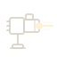
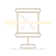

Cada câmara é um quebra-cabeça: posicionar espelhos, filtros e portais até os receptores acenderem com a cor pedida. Então as portas abrem e a próxima câmara começa.

Dispara um feixe vermelho, verde, azul ou branco.
Desliza num trilho e gira em passos fixos.

Deixa passar só o canal da sua cor.
Pede uma cor; os feixes somam por canal, R + G = amarelo.
Leva o feixe e o jogador ao portal ligado, girando a direção.
Abre quando os receptores ligados a ela estão satisfeitos.
matrixAutoUpdate = false: o Three usa a matriz que montamos.
export function composeTRS(
[tx, ty, tz], rotationYAngle, [sx, sy, sz]) {
return multiply(translation(tx, ty, tz),
multiply(rotationY(rotationYAngle), scaling(sx, sy, sz)));
}
const position = [center.x, height / 2, center.z];
const size = [drawnLength, drawnHeight,
glass ? GLASS_PANE_THICKNESS : thickness];
const trs = composeTRS(position, rotationY, size);
…
mesh.matrixAutoUpdate = false;
…
mesh.matrix.fromArray(order === 'TSR' ? tsr : trs);
const newX = camera.position.x + velocityX * deltaSeconds; if (!blockedAt(newX, camera.position.z)) camera.position.x = newX; else velocityX = 0; const newZ = camera.position.z + velocityZ * deltaSeconds; if (!blockedAt(camera.position.x, newZ)) camera.position.z = newZ; else velocityZ = 0;
#define escolhe.
vec3 N = normalize( normalMatrix * normal );
#ifdef PER_VERTEX
blinnPhong( mvPosition.xyz, N,
vDiffuse, vSpecular );
#else
vViewPosition = mvPosition.xyz;
vNormal = N;
#endif
…
#ifdef PER_VERTEX
…
#else
blinnPhong( vViewPosition,
normalize( vNormal ), diffuse, specular );
#endif
x += (alvo − x) · 0,1 por quadro corre mais a 144 FPS.testes unitários
modelos 3D importados
câmaras com solução testada
casas decimais de acordo com o Three
T·R·S das paredes internas montada à mão; condutos como malha por código.
Grafo de cena e a matriz dos demais objetos.
Matriz P e divisão por w refeitas e conferidas; navegação, colisão e portais.
A câmera que desenha a cena.
Blinn-Phong por vértice ou fragmento; texturas procedurais.
Reflexo planar do espelho e a rasterização.
Tudo por dt, damp exato para qualquer FPS, porta reversível sem salto.
O laço de quadros e o relógio.
O feixe é geometria, a luz é shader e o movimento é tempo: cada eixo do curso virou uma regra que o jogador sente.